Química
Temas
La materia base del universo
La materia es todo aquello que tiene masa y ocupa un lugar en el espacio. Todo lo que nos rodea está formado por materia.
Estados de la materia
| Estado | Características |
|---|---|
| Sólido | Tiene forma y volumen definidos. Sus partículas están muy juntas. |
| Líquido | Tiene volumen definido, pero toma la forma del recipiente. |
| Gas | No tiene forma ni volumen definidos. Sus partículas están muy separadas. |
| Plasma | Gas con partículas eléctricamente cargadas; aparece, por ejemplo, en las estrellas. |
Propiedades de la materia
Propiedades físicas: pueden observarse sin cambiar la composición.
- Masa
- Volumen
- Densidad
- Temperatura
- Punto de fusión
- Punto de ebullición
Propiedades químicas: describen cómo una sustancia puede transformarse.
- Combustibilidad
- Oxidación
- Reaactividad con ácidos
Clasificación
Sustancias puras
- Elementos: formados por un solo tipo de átomo. Ej.: Fe, O, Au
- Compuestos: formados por varios elementos unidos químicamente. Ej.: H₂O, CO₂.
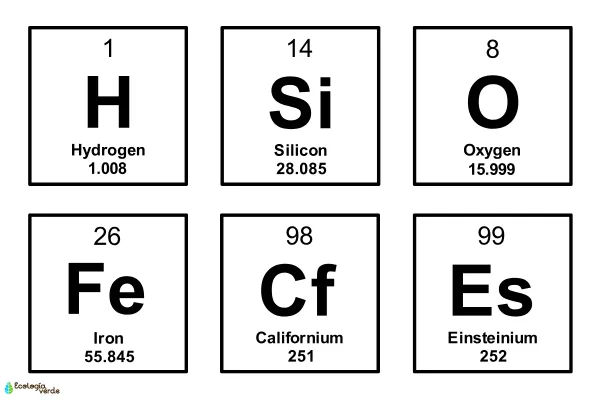
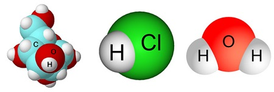
Mezclas
- Homogéneas: composición uniforme. Ej.: agua con sal.
- Heterogéneas: se distinguen sus componentes. Ej.: agua y aceite.
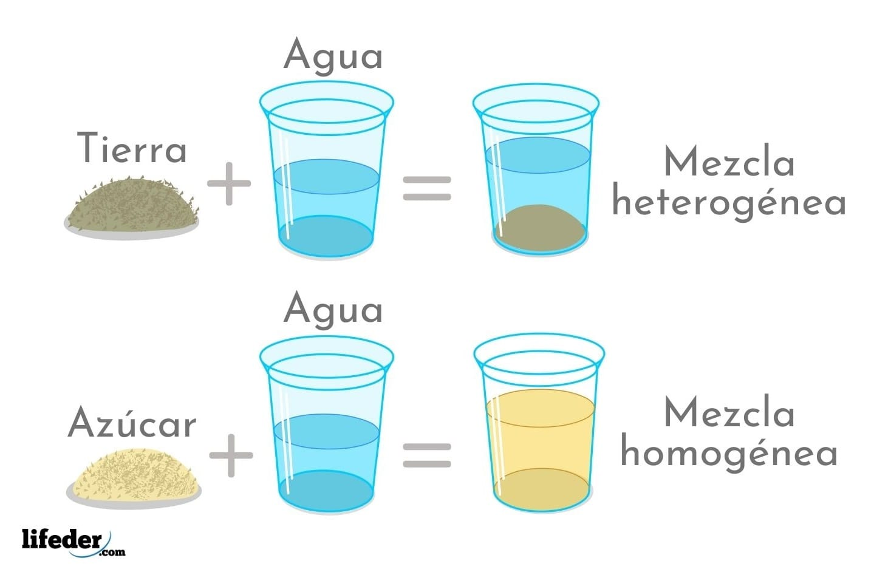
La materia en su interior
La materia está formada por átomos.
Un átomo está compuesto principalmente por:
- Protones (+): están en el núcleo.
- Neutrones (0): están en el núcleo.
- Electrones (-): se encuentran alrededor del núcleo.
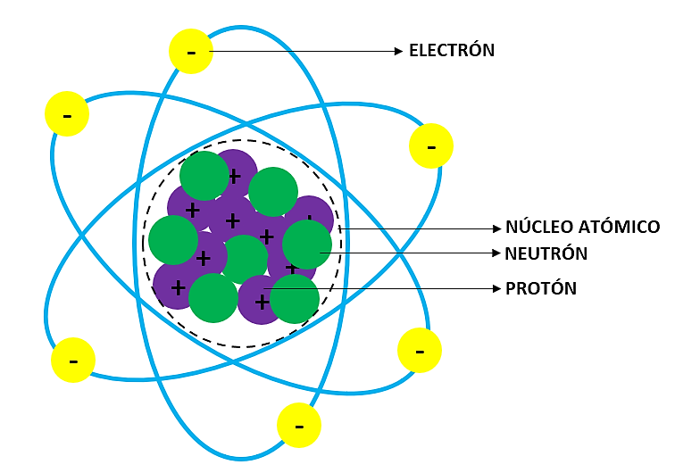
Número atómico
El número atómico (Z) indica la cantidad de protones.
Z = protones
En un átomo neutro:
protones = electrones
Número másico
El número másico (A) es:
A = protones + neutrones
Por lo tanto:
neutrones = A - Z
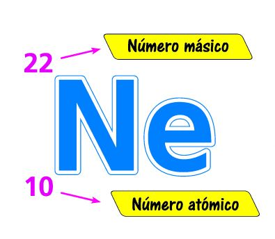
Isótopos
Son átomos del mismo elemento que tienen igual cantidad de protones, pero diferente cantidad de neutrones.
Ejemplo:
- Carbono-12
- Carbono-14
Ambos tienen 6 protones, pero diferente cantidad de neutrones.
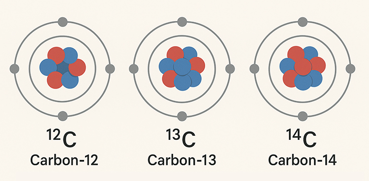
Iones
Son átomos que ganaron o perdieron electrones.
- Catión: pierde electrones -> carga positiva.
- Anión: gana electrones -> carga negativa.
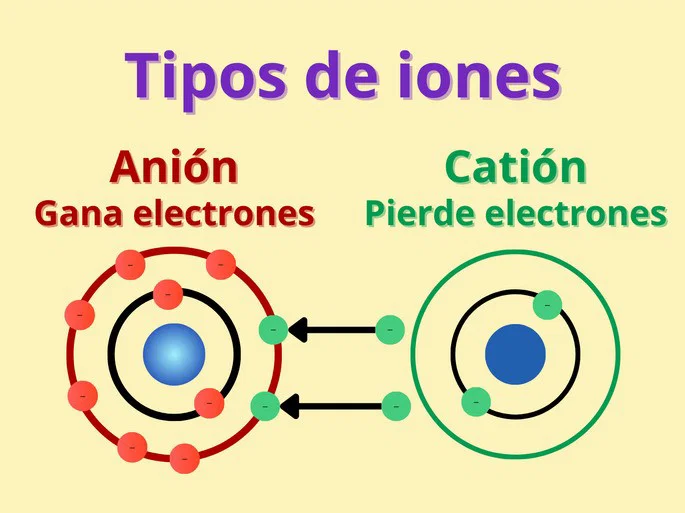
Enlace químico
Un enlace químico es la fuerza que mantiene unidos a los átomos.
Los átomos forman enlaces principalmente para alcanzar una configuración electrónica más estable.

Enlace iónico
Ocurre normalmente entre un metal y un no metal.
Un átomo pierde electrones y otro los gana.
Ejemplo:
Na + Cl -> NaCl
El sodio pierde un electrón y se convierte en Na⁺. El cloro gana ese electrón y se convierte en Cl⁻.

Enlace covalente
Ocurre normalmente entre no metales.
Los átomos comparten electrones.
Ejemplo:
H₂O
El oxígeno comparte electrones con los dos hidrógenos.

Puede ser:
- Simple: 1 par de electrones compartido.
- Doble: 2 pares.
- Triple: 3 pares.
Enlace metálico
Se produce entre átomos metálicos. Los electrones pueden desplazarse con relativa libertad.
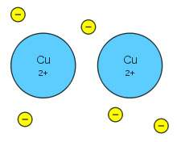
Esto explica propiedades como:
- Conductividad eléctrica.
- Conductividad térmica.
- Maleabilidad.
Transformaciones de la materia
Son cambios que experimenta la materia.
Cambios físicos
No cambia la composición química.
Ejemplos:
Hielo -> agua -> vapor
Sigue siendo H₂O.
Cambios de estado:
- Fusión: sólido -> líquido
- Solidificación: líquido -> sólido
- Vaporización: líquido -> gas
- Condensación: gas -> líquido
- Sublimación: sólido -> gas
- Deposición o soblimación inversa: gas -> sólido

Cambios químicos
Se forman sustancias nuevas.
Ejemplos:
- Combustión de madera.
- Oxidación del hierro.
- Cocción de un huevo.
- Reacción entre un ácido y una base.

Ecuaciones químicas
Representan una reacción.
Ejemplo:
2H₂ + O₂ → 2H₂O
Los números delante de las sustancias son coeficientes y permiten balancear la ecuación.
La cantidad de átomos de cada elemento debe ser igual a ambos lados.

Cantidad de sustancia
La cantidad de sustancia se mide en moles (mol).
Un mol contiene aproximadamente:
6,022 × 10²³ partículas
Este número se llama número de Avogadro.
Las partículas pueden ser:
- Átomos
- Moléculas
- Iones
Masa molar
Es la masa de un mol de una sustancia y se expresa en g/mol.
Ejemplo:
H2O:
- H = 1 g/mol
- O = 16 g/mol
Entonces:
H₂O = 2(1) + 16 = 18 g/mol
Fórmula principal
n = m / M
Donde:
- n = cantidad de moles
- m = masa en gramos
- M = masa molar
También:
m = n × M
Y para partículas:
N = n × 6,022 × 10²³

Estequiometría
La estequiometría estudia las relaciones cuantitativas entre las sustancias que participan en una reacción química.
Por ejemplo:
2H₂ + O₂ → 2H₂O
Esto significa que:
- 2 mol de H₂ reaccionan con 1 mol de O₂.
- Se producen 2 mol de H₂O.
Pasos para resolver problemas
- Balancear la ecuación.
- Convertir los datos a moles.
- Utilizar la proporción de los coeficientes.
- Convertir el resultado a la unidad solicitada.
Ejemplo
Si tenemos 4 mol de H₂:
2H₂ + O₂ → 2H₂O
La relación H₂:H₂O es 2:2, es decir, 1:1.
Por lo tanto:
4 mol H₂ → 4 mol H₂O
Conceptos importantes
- Reactivo limitante: determina cuánto producto puede formarse.
- Reactivo en exceso: sobra después de la reacción.
- Rendimiento teórico: cantidad máxima que debería producirse.
- Rendimiento real: cantidad obtenida experimentalmente.
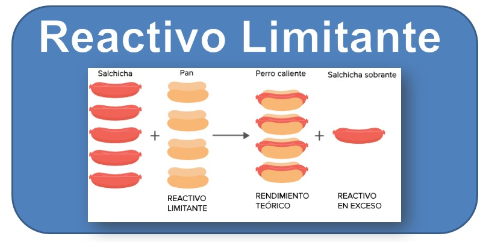
Disoluciones
Una disolución es una mezcla homogénea formada por:
Soluto
Es la sustancia que se disuelve.
Disolvente
Es la sustancia que disuelve al soluto.
Ejemplo:
Agua + sal
- Sal -> soluto
- Agua -> disolvente
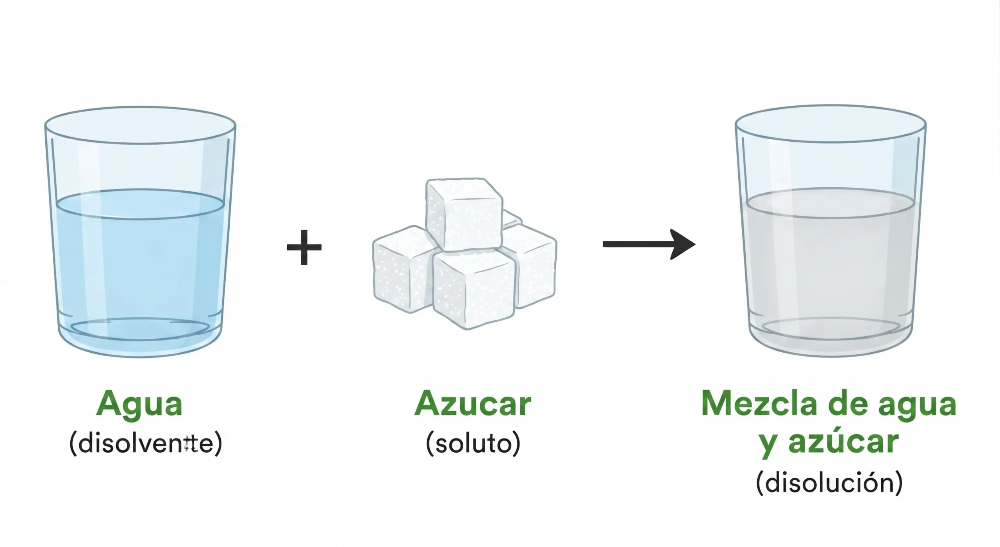
Concentración
Indica cuánto soluto existe en determinada cantidad de disolución.
Una forma común es la molaridad (M):
M = n / V
Donde:
- M = molaridad en mol/L
- n = moles de soluto
- V = volumen de la disolución en litros
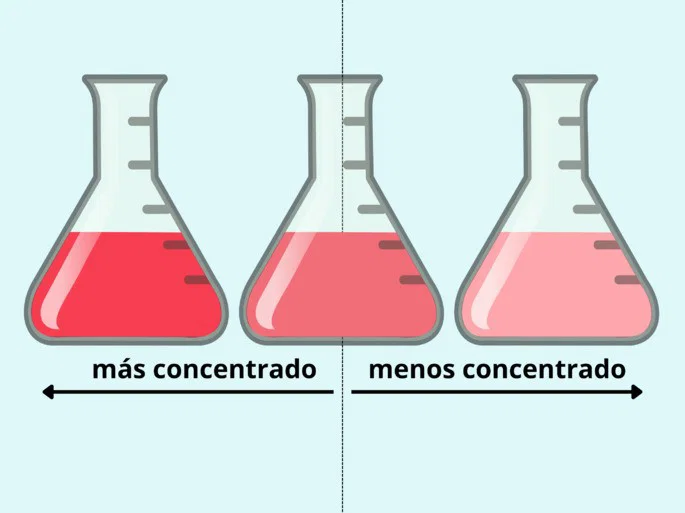
Dilución
Cuando agregamos disolvente, disminuye la concentración.
Se utiliza:
M₁V₁ = M₂V₂
Donde:
- M₁ = concentración inicial
- V₁ = volumen inicial
- M₂ = concentración final
- V₂ = volumen final
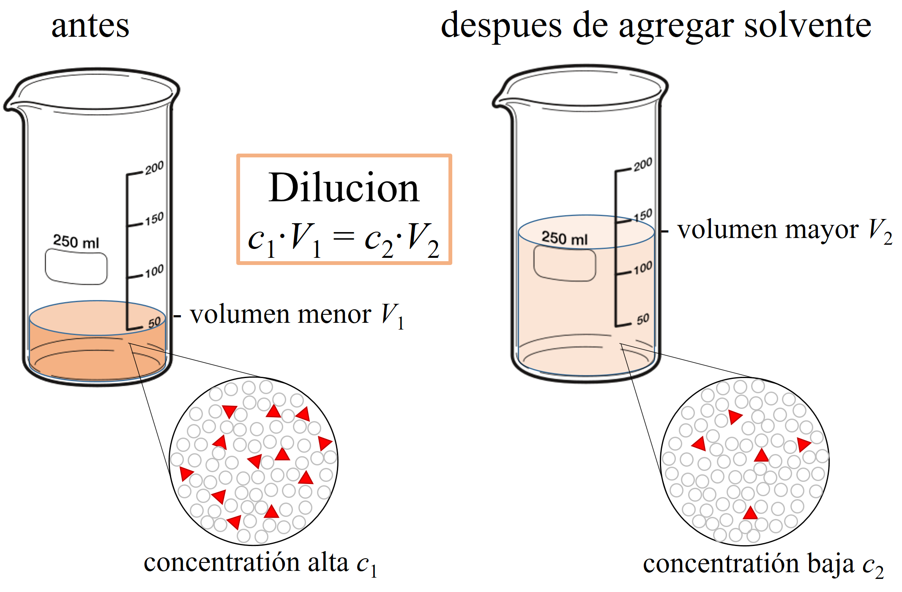
Soluciones según concentración
- Diluida: poca cantidad de soluto.
- Concentrada: mucha cantidad de soluto.
- Saturada: contiene la máxima cantidad de soluto que puede disolverse bajo determinadas condiciones.
Química orgánica
La química orgánica estudia principalmente los compuestos basados en carbono.
El carbono es muy importante porque puede formar enlaces con:
- Carbono
- Hidrógeno
- Oxígeno
- Nitrógeno
- Azufre
- Fósforo
- Halógenos
Hidrocarburos
Están formados solamente por carbono e hidrógeno.
Alcanos
Tienen únicamente enlaces simples.
Ejemplos:
- Metano → CH₄
- Etano → C₂H₆
- Propano → C₃H₈
Fórmula general:
CₙH₂ₙ₊₂
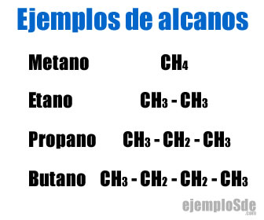
Alquenos
Contienen al menos un doble enlace.
Ejemplo:
Eteno → C₂H₄
Fórmula general:
CₙH₂ₙ
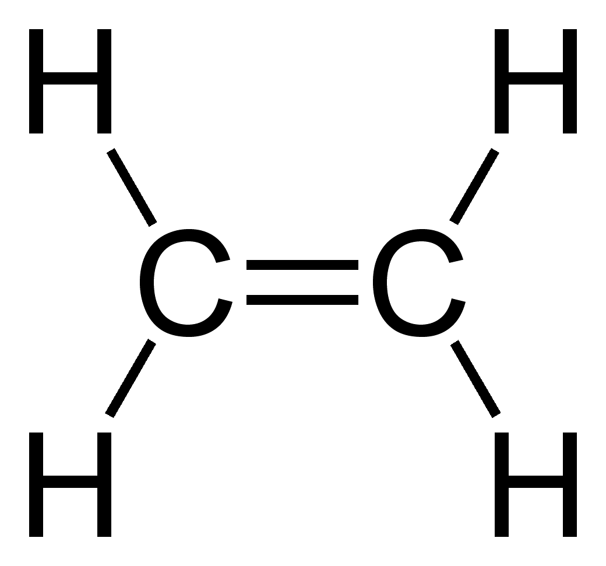
Alquinos
Contienen al menos un triple enlace.
Ejemplo:
Etino → C₂H₂
Fórmula general:
CₙH₂ₙ₋₂
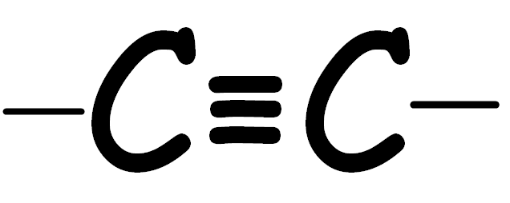
Grupos funcionales importantes
| Grupo | Ejemplo: |
|---|---|
| Alcohol | Etanol |
| Aldehído | Etanal |
| Cetona | Propanona |
| Ácido carboxílico | Ácido acético |
| Éter | Éter etílico |
| Amina | Metilamina |
Los grupos funcionales determinan muchas de las propiedades y reacciones de los compuestos orgánicos.
Biomoléculas
Las biomoléculas son moléculas fundamentales para los seres vivos.
Las principales son:
Carbohidratos
También llamados glúcidos.
Su función principal es proporcionar energía y también pueden cumplir funciones estructurales.
Ejemplos:
- Glucosa
- Fructosa
- Sacarosa
- Almidón
- Celulosa
Se clasifica en:
- Monosacáridos
- Disacáridos
- Polisacáridos
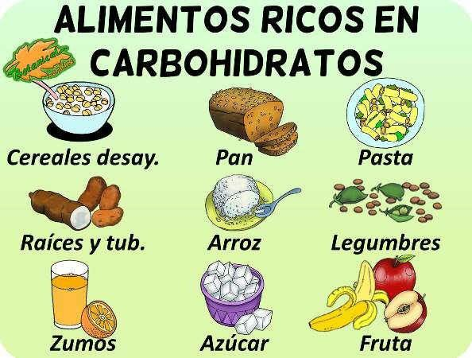
Proteínas
Son moléculas formadas por aminoácidos.
Funciones:
- Estructural
- Transporte
- Defensa
- Regulación
- Catalización de reacciones
Las enzimas son proteínas que aceleran reacciones químicas en los seres vivos.
Ejemplo:
Amilasa → ayuda a descomponer almidón.
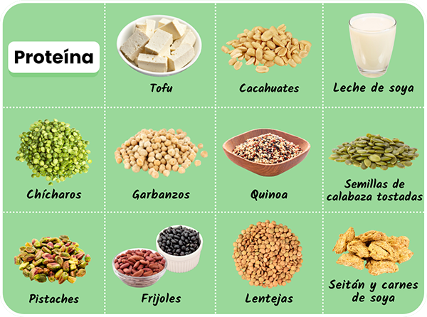
Lípidos
Incluyen grasas y aceites.
Funciones:
- Reserva energética.
- Formación de membranas celulares.
- Protección.
- Aislamiento térmico.
- Participación en procesos de señalización.
Ejemplos:
- Grasas
- Aceites
- Fosfolípidos
- Esteroides
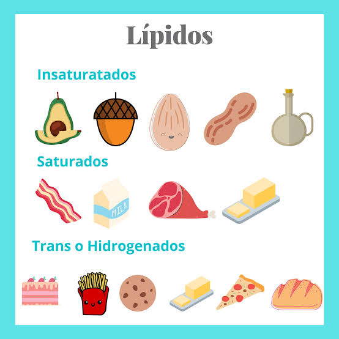
Ácidos nucleicos
Son moléculas que almacenan y transmiten información genética.
Los principales son:
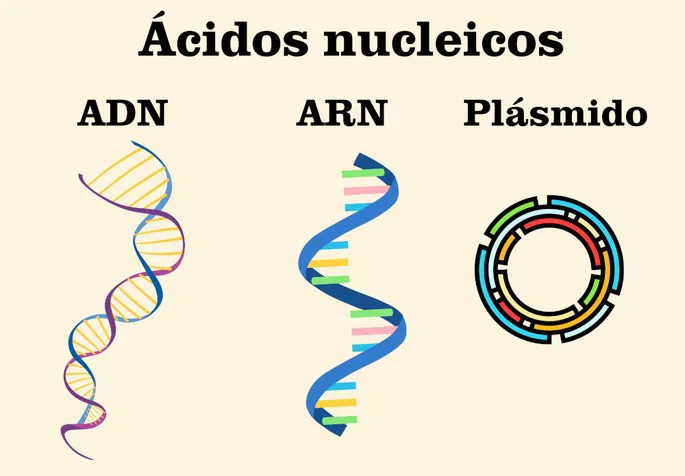
ADN
Ácido desoxirribonucleico
Contiene la información genética.
ARN
Ácido ribonucleico
Participa, entre otras cosas, en la utilización de la información genética para producir proteínas.
Están formados por unidades llamadas nucleótidos.